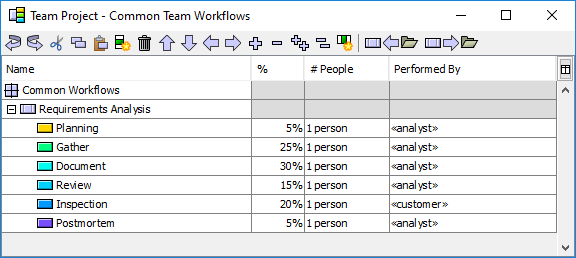

In the next step of the project launch process, the team typically formalizes the steps in their development process. To do this, you may draw upon existing organizational processes, or you may define new processes as a team during the launch. The team may create defined processes, or they may simply identify common, repeatable workflows. The Process Dashboard provides tools that assist with this task.
If your team is defining new processes from scratch, it is often a good idea to use a whiteboard, easel, and other traditional meeting aids to capture the team's ideas, as this helps to promote the free flow of ideas. When the team processes begin to solidify, it is helpful to have an individual enter these into the dashboard. (On the other hand, if your process definitions take a long time to solidify, it may be more helpful to wait until after the meeting is over to enter the process steps into the dashboard.)
Processes and workflows are entered into the Common Team Workflows Editor. From the Work Breakdown Structure Editor window, you can access the Common Team Workflows Editor by selecting the Workflow menu and choosing Edit Workflows.

Processes and workflows are once again displayed hierarchically and
edited in an outline format. (For more in-depth information on editing
this outline, see the Editing the Work
Breakdown Structure help topic.) In this hierarchical outline,
each item that is a direct child of the Common Workflows node
represents a single process or workflow. These items
are displayed with an etched rectangular icon ( ). You
can designate a given node as a process or workflow by un-indenting it
as far to the left as possible.
). You
can designate a given node as a process or workflow by un-indenting it
as far to the left as possible.
Define the steps in a process or workflow by creating items hierarchically underneath it. Underneath a process or workflow, you can define documents that will be created and tasks that will be performed. To define the type of each item you create, click on its icon to display a menu. When defining a high-maturity process, make certain to select the most appropriate process phase for each task you create.
You are not limited in the number of processes/workflows you can create. Each process/workflow, however, should be given a unique name.
The columns on the right are completely optional, but entering data can save you a great deal of time later.

When you apply this workflow to a component in your team project, the WBS Editor will look at the time you have estimated for that component, and subdivide the time based upon the percentages you have entered.
If the numbers in a given workflow don't add up to exactly 100%, the actual summed percentage will be displayed on the first row of the workflow. You can double-click that number to normalize everything to 100%. (But this step is not strictly necessary: if the numbers don't add to 100%, the WBS Editor will treat them as "weights" and normalize them to 100% when you apply the workflow.)
Occasionally, a workflow may include a task (such as a sign-off) that is always performed by a certain team member. You can enter that team member's initials in the Performed By column, and when you apply this workflow in the WBS, the task will automatically be assigned to them.
The columns described above are used by most teams, so they are always
visible. However, a number of optional/advanced columns are also available.
To enable these optional columns, click the Add Column button on the toolbar
( ),
and select from the following choices:
),
and select from the following choices:
This column can be helpful when a particular step is a very small percentage of the overall workflow. Entering a minimum time can prevent the task from receiving an impossibly small time estimate if the workflow is applied to a small component.
This column also makes it possible to specify a fixed time for a particular step. Just enter the fixed time in this column, and leave the percentage and rate columns blank. (A blank percentage and rate is equivalent to zero, so the task would normally receive no time; but that zero will then be overridden by the time you enter in this column.)
These columns are auto-populated with default values based on industry data and best practices, but you are encouraged to update them once your team has gathered historical data of its own. The numbers in these columns will be used to build a quality plan for each workflow, modeling the injection and removal of defects in the product as it moves through the process.
For example, you may have a web page on an organizational process library or a team wiki that publishes instructions for a given workflow, and provides links to helpful forms, checklists, templates, etc. You can enter the http URL of that web page in this column, and the page will appear in the Process Dashboard's script menu when an individual performs the associated task.
You can attach links to an overall workflow and/or to specific tasks within a workflow. You can also enter multiple links for a single row.
There is not a Save button on the Common Team Workflows Editor. Instead, workflow definitions are automatically saved when you save the main work breakdown structure. To save, switch back to the main Work Breakdown Structure Editor window and select Save from the File menu.
As you define the steps in a workflow, two special task types are provided in support of high-maturity personal planning. These types are "PSP Task" and "High-Maturity Planning Task."
Since a PSP Task represents all of the steps in the PSP2.1 process, you do not need to explicitly add the PSP2.1 phases (Design, Design Review, Code, Code Review, Compile, Test) in places where you have added a PSP Task. However, you do need to add tasks for Design Inspection and Code Inspection. These tasks should immediately follow the PSP Task in your workflow. When you follow this pattern, the inspection tasks will automatically be inserted into the correct chronological order between the phases of the PSP Task in the individual's "Flat View" task list.
Unlike the "PSP Task," the "High-Maturity Planning Task" does not force the use of LOC as a size measure, and it does not dictate the list of process phases that are performed after planning. Instead, you use the Units column to select the appropriate size measure for the planning task, and you can add any list of process phases you like to the enclosing workflow definition. Accordingly, this item is an excellent choice for non-software work, and for software development workflows that diverge from PSP2.1.
In either case, the responsible individual will be able to draw upon their personal historical data to refine their plan. This provides a bridge between team historical data and personal historical data:
This two-phased approach is an example of the "rolling wave" planning technique, which is considered a best-practice with the project management commmunity.
Two buttons on the toolbar provide the ability to import ( ) and
export (
) and
export ( ) workflows. This makes it
possible to share workflows between projects and between project
teams. When you click one of these buttons, the workflow editor will
ask you to identify the name of a workflow library file. You can
export workflows to a new or existing library file, or import
workflows from an existing file. After choosing a file, the
Import/Export Team Workflows window will appear. This window shows the
workflows from the current project in a table on the left, and the
workflows from the library in a table on the right.
) workflows. This makes it
possible to share workflows between projects and between project
teams. When you click one of these buttons, the workflow editor will
ask you to identify the name of a workflow library file. You can
export workflows to a new or existing library file, or import
workflows from an existing file. After choosing a file, the
Import/Export Team Workflows window will appear. This window shows the
workflows from the current project in a table on the left, and the
workflows from the library in a table on the right.

When exporting, you can select a workflow in the table on the left and click the Add button to export it to the library on the right. When importing, you can select a workflow in the library table on the right and click the Add button to import it to the project workflows on the left.

Workflows are identified by their names (for example, "Simple Process" in the image below). If you import or export a workflow which has the same name as an existing workflow in the destination table, the existing workflow will be overwritten. For example, in the image below, the user is importing workflows from an existing library. They have selected the "Simple Process" workflow in the library on the right. Since there is already a workflow by that name in the project workflow list on the left, the application has automatically highlighted it, and changed the text on the Add button to "Overwrite," indicating that if this workflow is imported it will overwrite the workflow that is highlighted on the left.

At times, you may wish to import all the workflows in a library, or export all of the workflows in your project. The Add All button will perform this task. Keep in mind that any existing workflows with the same names will be overwritten, as described in the paragraph above.
The changes you make in the Import/Export Team Workflows window will not be saved until you click the Import or Export button at the bottom of the window. (Only one of these buttons will appear, depending on whether you chose to import workflows or export workflows.) When you click the Export button, the changes you made to the workflow library will be saved to the named file. When you click the Import button, the changes you made to the project workflows will be applied to the contents of the Common Team Workflows Editor. When importing or exporting, if you make a mistake or change your mind, just click the Cancel button and no changes will be saved.